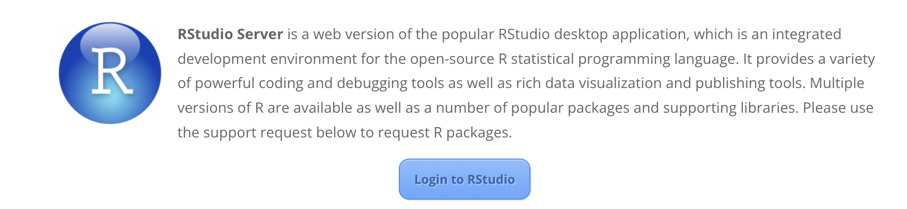
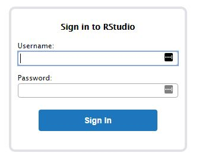
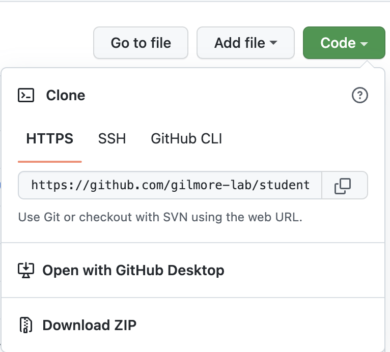

4 Set up R and RStudio
4.1 On PSU TLT’s RStudio Server (recommended)
- What network are you on?
If on campus, make sure you are on the
psunetwork.If you are using RStudio remotely (off campus) you need to install and connect to VPN FIRST.
- Log in to R Studio
Go to: https://lat.tlt.psu.edu/home/remoteaccess/oss-web-apps/
Scroll down to the RStudio Server Section

Click on the blue box Login to RStudio
This link: https://rstudio.tlt.psu.edu/s/af233cfc78a318b9e0671/auth-sign-in may work instead of the above steps
Use your PSU Access Account Username and Password to sign in to RStudio.

4.1.1 How to Connect Github and RStudio on the TLT Server using a GitHub Access Token
4.1.1.1 Enter your email (used to log into R Studio) and username into RStudio
- Navigate to the Terminal Tab in R Studio
- Type the following in to the Command line
$ git config --global user.email "user@psu.edu"
$ git config --global user.name "First Last"
4.1.1.2 Each person needs to have their own or project branch
First request from the Lab Manager to create your own branch and provide the Name of the Branch (e.g. firstname_lastname).
The lab manager will create this branch on the Github repository site.
4.1.1.3 Enter your branch into the repository in Rstudio
- Navigate to the Terminal Tab in R Studio
- Type the following in to the Command line:
$ git branch -m <branchName>
4.1.1.4 Create an Access Token in Git
Follow the Create a Personal Access Token instructions.
Be sure to copy this token into a safe place. If it is lost, one must be re-created.
4.1.1.5 Clone a Git Repository to RSTudio on TLT Server
- Navigate to the GitHub project page (e.g. https://github.com/gilmore-lab/student-testbed)
- Press the button
Code - Copy the HTTPS link of the project by clicking the little icon to the right of the URL. The link will be something like https://github.com/gilmore-lab/student-testbed.git

- Copy this to another blank page. This will need to be altered to the following:
https://oath2:<PersonalAccessToken>@github.com/<repository>/<project>
- The
Personal Access Tokencreated in Git will be used in the above location.https://oath2:<PersonalAccessToken>@github.com/gilmore-lab/student
4.1.1.6 Make changes to branch on repository
- Ensure the branch name is listed in the Git window in R
Git Window in R
Always run ‘Git Pull’ before changes are made
Make Changes to File
Commit changes
Run ‘Git Push’ to Your Branch on Github
Go to
github.com/gilmorelab/<repository name>and create a Pull requestNotify the lab manager that a pull request is available on GitHub for
<repository name>
4.1.3 Configure RStudio for git integration
- From within RStudio, open the
Toolsmenu and select theGlobal Options...item. - Select the
Git/SVNpanel in the left column. It is near the bottom of the list. - Check the
Enable version control interface for RStudio projectscheckbox at the top of the window. - Click on the
View public keylink to see if you have a valid SSH RSA Key already. - If the window opens and contains a long text string that begins with “ssh-rsa” and ends with “
@lxclusterapps”, where <your_PSU_id>is your PSU ID (e.g.,rog1), you are half-way home. - If the window is opens and is empty, you must generate a new key:
Close the window and click on theCreate RSA Key...button.- From RStudio, select the
Terminalpane. This will bring up a command line with a prompt that looks something like this:bash-4.2$. - Type
ssh-keygen.pyand hit return. This will generate an SSH key. - Type
ls ~/.sshand hit return. You should see something that looks like this:
bash-4.2$ ls ~/.ssh id_rsa id_rsa.pub known_hosts- The
id_rsa.pubis a file containing a ‘public’ key that you can save on GitHub so that GitHub knows who you are when you connect to it from the PSU TLT RStudio server. - (Optional) type
cat ~/.ssh/id_rsa.pubto see the contents of this key file. - Select
Global Options...from the RStudioToolsmenu again. - Select
Git/SVNfrom the left panel. - Select the
View public keylink to view the SSH key you just generated. - Copy the key to the clipboard (command+C on Mac)
- Visit your account on GitHub. Rick’s is at https://github.com/rogilmore.
- Click on your avatar or photo in the upper right hand corner and select the
Settingscommand. - From the list at left, select the
SSH and GPG keyspanel. - Look at the list of SSH keys.
- If there are no SSH keys…
- Press the
New SSH keybutton. - Paste the key you generated in RStudio into the space provided.
- Add a title like
PSU TLTorlxcluster - Press the
Add SSH keybutton to save the key.
- Press the
- If you see an existing key with
PSU TLTorlxclusteryou should already be ready to go. - Return to RStudio, hit
Applyto save your changes, andOkto exit theSettingspanel. - Test the connection between RStudio and GitHub by cloning a repository.
- Visit the lab protocols repository at https://github.com/gilmore-lab/protocols.
- Click on the
Clone or downloadbutton. - Confirm that the window title says
Clone with SSH. If it does not, click on theUse SSHlink on the upper right side. - Click on the clipboard icon to copy the
git@github.com...link to the repository to your clipboard. - Switch back to RStudio.
- Under the
Filemenu, select theNew Projectoption. - Select
Version Control. - Select
Gitin the next window. - Paste the repository link you copies from GitHub into the
Repository URLfield. - Select a name for the local repository. I usually keep the name from GitHub, so in this case, I would use
protocols. - Select a directory/folder where the repository will be copied to. I have an
rstudio/folder I use for this. If you need to create a folder, you may do so. - Click on the
Create Projectbutton. This will copy the repository from GitHub to your personal (PASS) file space on PSU’s servers.
4.2 On your computer
- Download and install R from https://cran.r-project.org/
- Download and install RStudio from https://www.rstudio.com/products/rstudio/download/#download. Choose your platform from the ‘Installers’ (e.g., Windows, Mac, Ubuntu, or Fedora Linux).